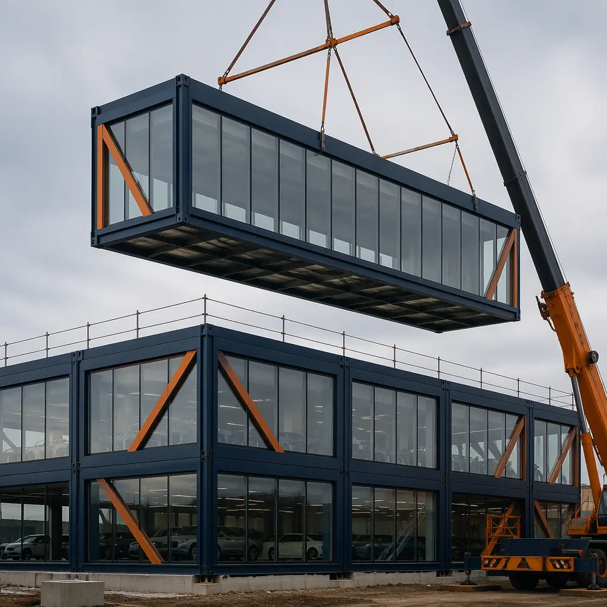
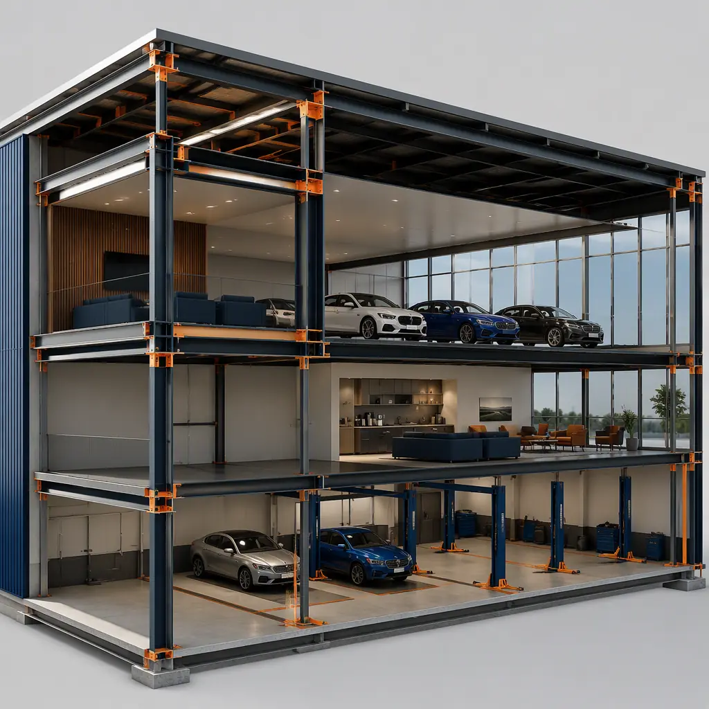
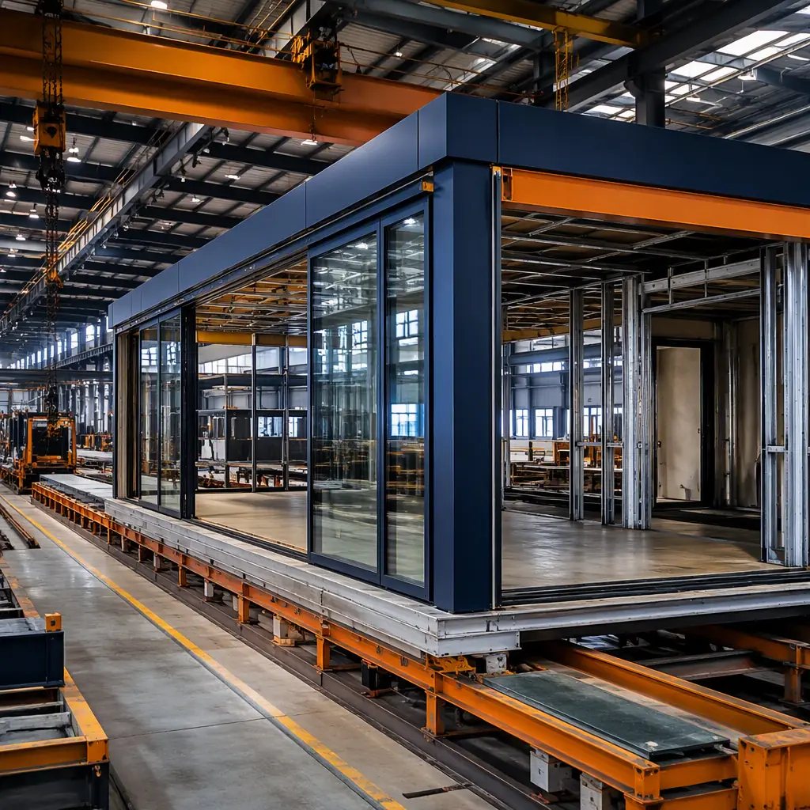
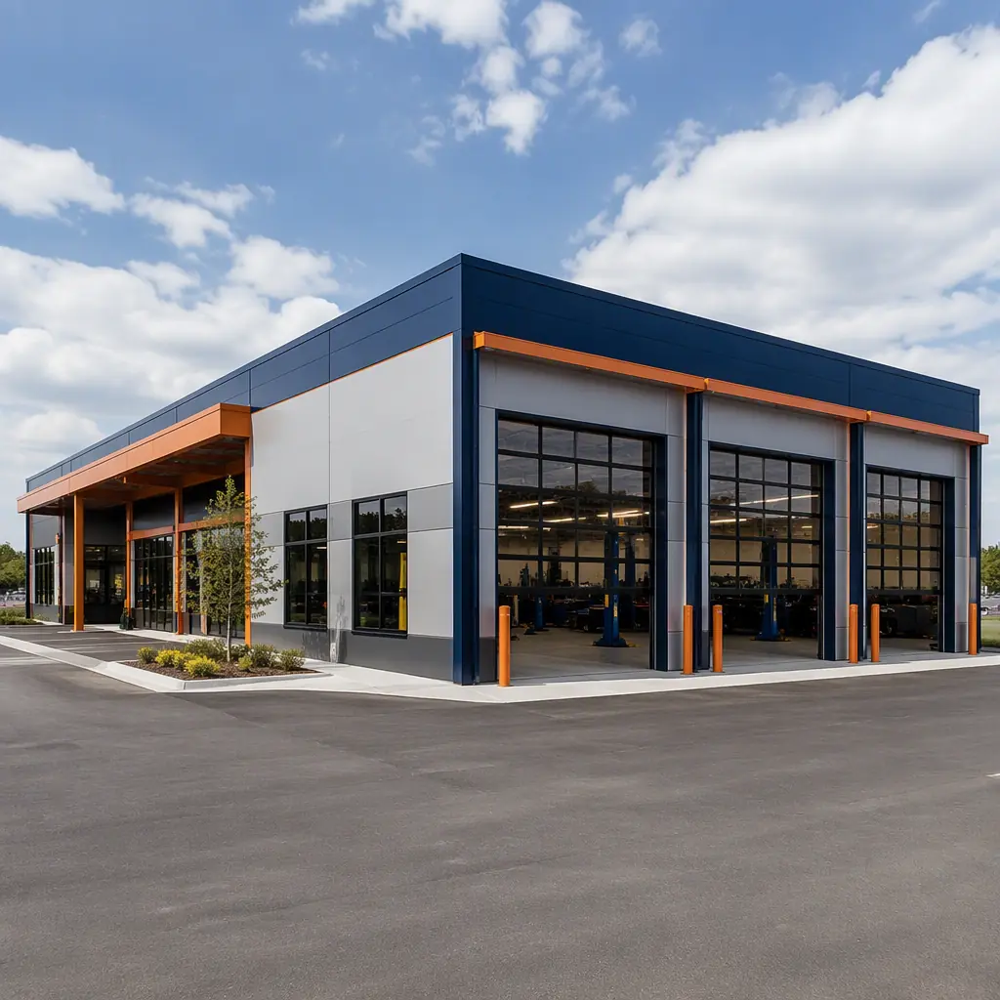

The United States is home to approximately 16,800 franchised new-car dealerships, according to NADA 2025 data, and a significant portion of these facilities are aging into obsolescence. Many were built in the 1970s and 1980s and now face the dual pressure of deteriorating infrastructure and increasingly stringent OEM brand-image requirements. Traditional dealership construction takes 12 to 18 months from groundbreaking to ribbon-cutting — a timeline that becomes especially painful when you consider that a mid-size dealership loses an estimated $50,000 to $100,000 in monthly revenue during a full-site rebuild or major renovation. Now multiply that by 12 or 18 months. The math is brutal.
The dealership build is uniquely complex among commercial projects. A typical facility spans three functionally distinct zones — a glass-walled showroom with 20-foot ceilings and polished floors, a 40-to-60-bay service center with oil containment and exhaust extraction systems, and a parts department plus administrative offices — each demanding its own structural, HVAC, and fire-protection design. Modular construction with prefabricated steel modules compresses the total build timeline to 6–9 months while delivering factory-precision quality that exceeds the tolerances required by Ford, Toyota, GM, and other OEM brand-identity manuals. At MODURA, we've applied our 500+ project track record across 18 countries to the automotive retail sector, and the results are transformative.
Why Car Dealership Construction Is Harder Than Standard Commercial

A car dealership is not a single building — it is three buildings operating under one roof, each with radically different performance requirements. The showroom demands expansive open spans, floor-to-ceiling glazing, premium finish materials, and dramatic architectural presence to project brand prestige. The service center requires heavy-duty floor slabs rated for vehicle lifts, integrated trench drains, oil-water separators, compressed-air distribution networks, and exhaust extraction systems capable of handling 40 or more bays simultaneously. The parts and office zone needs conventional commercial fit-out with data cabling, break rooms, parts shelving, and customer waiting areas.
These zones don't just look different — they have different structural loads, different fire-suppression requirements (wet sprinklers in showrooms vs. foam systems near flammable service areas), different HVAC strategies (high-bay radiant heating in service vs. VAV systems in offices), and different acoustical-performance targets. In a conventional build, this means coordinating 15 to 20 separate subcontractors across three parallel workstreams, each with its own sequencing dependencies. A delay in the showroom glazing doesn't just delay the showroom — it cascades into the service bay commissioning and pushes the Grand Opening back by weeks.
Then there are the OEM facility standards. Ford, Toyota, General Motors, and Stellantis each publish 200+ page brand-identity manuals governing everything from exterior facade material specifications and sign-band dimensions to interior lighting color temperature and customer-lounge furniture layouts. Deviations can delay franchise approval, jeopardize co-op advertising funds, or trigger costly punch-list corrections. Achieving compliance with field labor working from printed drawings introduces variability that factory-controlled manufacturing eliminates. This is precisely where modular design flexibility becomes a strategic advantage: BIM-integrated module fabrication verifies OEM compliance before a single steel column leaves the factory floor.
How Modular Construction Restructures the Dealership Build

Modular construction flips the dealership build sequence on its head. Instead of performing every trade sequentially on-site under weather-dependent conditions, the majority of the work moves into a controlled factory environment where it runs in parallel with site preparation. Here's how MODURA restructures each zone:
Showroom modules arrive with the structural steel frame, glazed curtain wall, and interior finishes — drywall, ceiling grid, lighting, floor substrate — all pre-installed. Because modules are fabricated to ±2mm tolerances (far tighter than the ±1/2-inch typical in field construction), large-format glass panels fit perfectly on the first attempt, eliminating the costly refitting cycles that plague conventional curtain-wall installation. The 20-foot clear-height requirement is achieved by stacking or ganging modules with open-web steel trusses designed into the frame from the start.
Service-center modules are the real game-changer. Each bay module is pre-plumbed with in-slab trench drains connected to a centralized oil-water separator, pre-piped with compressed-air drops at lift locations, and pre-wired for vehicle-lift power, bay-door motors, and exhaust-extraction fans. The concrete floor slab is poured and cured in the factory under ideal conditions, eliminating the risk of cold-weather curing defects that can crack under heavy vehicle loads. Bay modules arrive ready for lift installation — not ready for rough-in.
Parts and office modules ship with MEP rough-in complete, CAT6 data cabling terminated to patch panels, wall finishes painted, ceiling grid installed, and HVAC ductwork connected to module-level terminal units. On-site work in these zones drops to inter-module utility tie-ins, corridor connections, and final furniture installation. This is the same factory-to-finish approach that powers our modular retail construction and modular industrial construction projects.
The timeline compression is substantial: 6 to 9 months from foundation pour to occupancy, versus 12 to 18 months for conventional construction. The on-site scope shrinks to foundation and underground utility work, crane-setting modules (typically 2–4 weeks), inter-module connections, and final commissioning. The 15-to-20-subcontractor coordination headache collapses into a handful of trade partners working a far simpler scope on a compressed schedule.
Cost Comparison — Modular vs Traditional Dealership Construction
Modular construction delivers a 19–21% cost advantage for a typical 25,000-square-foot dealership, with the savings concentrated in the service center and showroom zones where factory fabrication eliminates the most field-labor hours. The table below breaks down the cost comparison for a representative mid-size single-franchise dealership with a 5,000 sq ft showroom, a 15,000 sq ft / 30-bay service center, and 5,000 sq ft of parts and office space:
| Cost Category | Conventional ($) | Modular ($) | Difference |
|---|---|---|---|
| Showroom (5,000 sq ft) | 1,250,000 – 1,750,000 | 1,000,000 – 1,350,000 | −20–23% |
| Service Center (15,000 sq ft, 30 bays) | 2,250,000 – 3,000,000 | 1,800,000 – 2,400,000 | −20% |
| Parts & Offices (5,000 sq ft) | 600,000 – 850,000 | 480,000 – 640,000 | −20–25% |
| Site Work & Foundations | 400,000 – 600,000 | 350,000 – 500,000 | −13–17% |
| Total (25,000 sq ft) | 4,500,000 – 6,200,000 | 3,630,000 – 4,890,000 | −19–21% |
These figures represent hard construction costs only. They exclude land acquisition, OEM-specific branding elements (signage, furniture packages, and image-program items typically procured through manufacturer-approved vendors), and soft costs such as architectural fees, permitting, and financing. For a deeper dive into the numbers across building types, see our 2026 modular construction pricing guide, which benchmarks costs per square foot across commercial, industrial, and institutional categories.
The site-work savings deserve special attention. Because modules arrive 85–90% complete, on-site labor hours drop by roughly 40–50%. This means fewer workers on site for fewer weeks, which translates directly to reduced general-conditions costs (temporary power, site security, portable toilets, dumpster service) and lower supervision overhead. It also means fewer change orders. Factory fabrication locks in material quantities and labor scope early, whereas conventional dealership builds routinely see 8–12% cost growth from field-driven changes and unforeseen conditions.
OEM Brand Standards and Modular Compliance

One of the most persistent misconceptions about modular construction is that it limits design flexibility. For a deeper look, our modular hospital construction — buildin… guide covers the details. In reality, the opposite is true for dealership projects governed by precise OEM standards. When every dimension, material, and finish is specified by a brand-identity manual that runs hundreds of pages, factory fabrication becomes an asset, not a constraint.
MODURA's BIM-to-factory workflow — detailed in our BIM-to-factory digital workflow guide — imports the OEM facility standards directly into the module design model. Every critical dimension — showroom ceiling height, service-bay depth, sign-band setback, customer-lounge sightlines — is verified against the OEM specification before fabrication begins. Because modules are built to ±2mm tolerance, the finished building matches the approved design with a fidelity that field construction simply cannot replicate. For dealership groups pursuing multi-franchise auto malls, this approach scales elegantly: the same factory processes that produce a Toyota-compliant showroom module also produce a Ford-compliant one, with the brand-specific parameters swapped at the BIM level.
The permitting pathway is also more predictable. Modules undergo in-factory inspection at key fabrication milestones, which means the local authority having jurisdiction (AHJ) reviews a substantially complete, code-compliant assembly rather than inspecting rough-in work across dozens of site visits. For more on how modular projects navigate local approvals, refer to our permitting and zoning guide.
Revenue Preservation — The Real ROI of Faster Construction
The headline cost savings are compelling, but the revenue-preservation case is what closes the deal for most dealership principals. For a deeper look, our modular hospital construction cost breakdown… guide covers the details. Consider the math for a mid-size single-point dealership generating $3 million to $5 million in annual gross profit. During a full-site rebuild or a major renovation that forces partial closure, the dealer loses sales, service, and parts revenue. Conservatively, that's $50,000 to $100,000 per month in lost gross profit — and for high-volume metro dealers, the figure can exceed $150,000 per month.
A conventional 15-month construction timeline means the dealer absorbs $750,000 to $1,500,000 in lost-profit exposure. Modular construction, delivering occupancy in 6 to 9 months, slashes that window by 6 to 9 months — preserving $300,000 to $900,000 in revenue that a conventional build would forfeit. Combined with the 19–21% hard-cost savings, the total project-level advantage of modular can exceed $1.5 million on a single-point dealership project. Our developer's ROI guide provides a full cost-benefit framework applicable to automotive retail as well as multifamily, hospitality, and office sectors.
There is also a less quantifiable but equally real benefit: earlier Grand Opening means earlier qualification for OEM volume incentives and stair-step bonus programs. For a deeper look, our modular hospital wing expansions — addi… guide covers the details. Manufacturers structure their dealer incentive programs around calendar-year or model-year sales targets. Opening in April instead of October gives the dealer two additional selling seasons (spring and summer) to build toward annual targets. For a franchise entering a new market, those six months can mean the difference between hitting the manufacturer's first-year sales requirement and falling short — with consequences for floor-plan financing terms and future allocation priority.
Is Modular Right for Your Dealership Project?
Modular excels in three dealership scenarios: For a deeper look, our modular pet boarding & dog daycare constr… guide covers the details. ground-up new builds on greenfield sites, major renovations where the dealer needs to maintain partial operations during construction, and multi-franchise auto malls where standardizing module types across brands creates compounding efficiency gains. For a new-point dealer building from scratch, the case is unambiguous — shorter timeline, lower cost, tighter quality control, and faster path to revenue generation.
Renovation projects require more nuanced evaluation, but the modular approach often proves viable when the existing structure can remain partially operational. Service-center modules, for example, can be fabricated off-site and crane-set in phases, allowing the dealer to keep a subset of bays open throughout construction. This phased approach is far harder to execute with conventional stick-built methods, where the noise, dust, and site congestion of full-scale construction make concurrent operations impractical.
For dealership groups pursuing multi-franchise auto malls — a growing trend as manufacturers consolidate rooftops — modular construction offers a standardization advantage that no other delivery method can match. For a deeper look, our modular urgent care centers — build wal… guide covers the details. Once the first Toyota showroom module is engineered and approved, the next one is a repeat, not a redesign. The same applies to service-center bay modules, parts-department modules, and customer-lounge modules. The learning-curve effect that modular manufacturers capture in the factory translates directly to faster delivery and lower per-square-foot costs for subsequent buildings in the portfolio.
MODURA brings 500+ completed projects, ISO 9001 and ISO 14001 certified manufacturing across four factories, and an annual capacity exceeding 2,000 modules to every dealership engagement. Whether you're a single-point dealer planning a flagship rebuild or a group operator developing a multi-franchise auto mall, we can deliver a dealership that meets OEM standards, opens months earlier, and costs substantially less than conventional construction. The automotive retail industry is evolving faster than ever — your facility should be able to keep up.